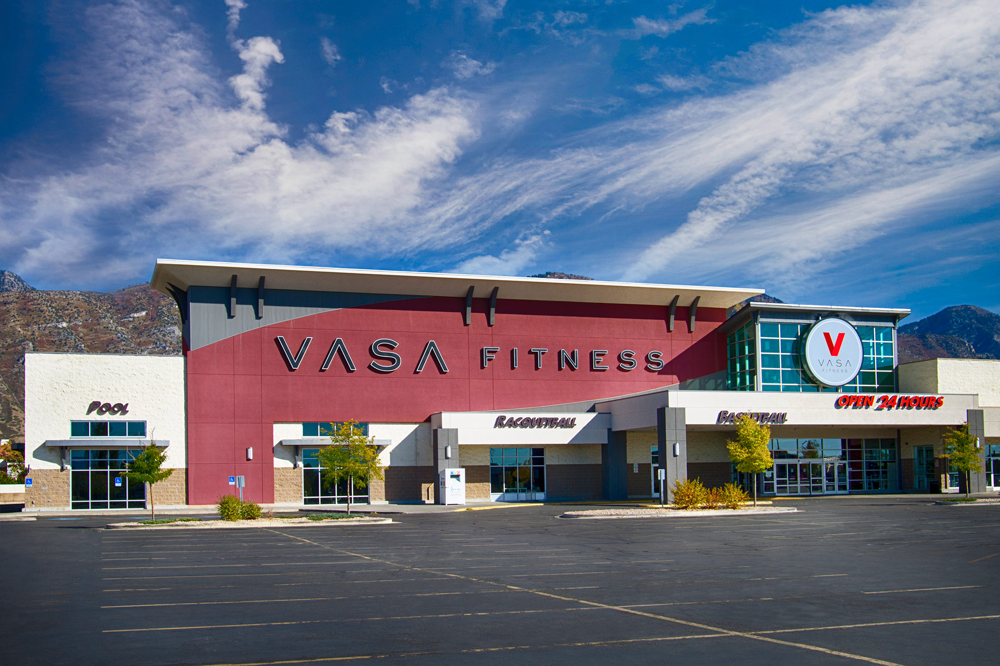
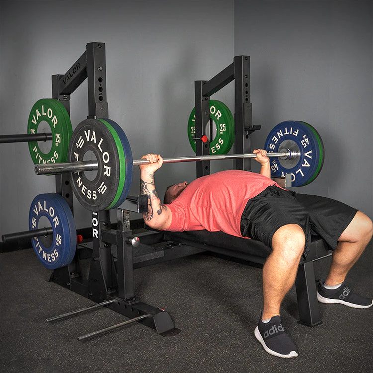
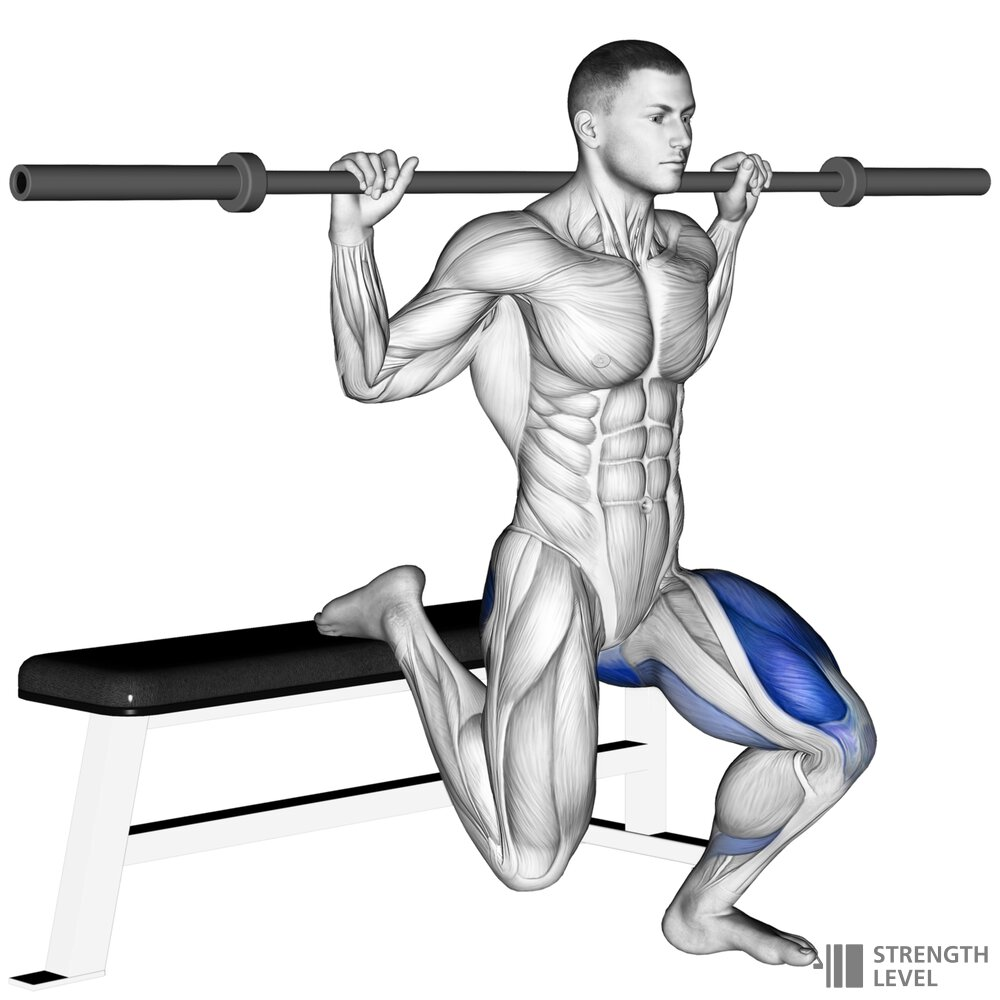

GYM
This is why I love going to the GYM:

- I absolutely love hitting the gym, and it's not just about getting stronger or fitter. Sure, smashing my weightlifting goals gives me this incredible buzz of achievement. It's like, every time I tick off a goal, it's not just about the weights; it feels like I'm proving to myself that I can nail pretty much anything I put my mind to. And then there's the whole social side of it. It's not all sweat and grunts; I get to catch up with my friends too. We manage to strike this perfect balance, having a laugh and pushing each other without hogging too much of each other's workout time. It's these moments that make the gym so much more than a place to work out for me—it's where I grow, not just physically but as a person, surrounded by people I care about.

- I've got to say, morning workouts at the gym are my absolute favorite. There's something about starting my day breaking a sweat that just opens up the rest of my day, leaving me feeling super motivated and ready to take on anything. I'm doing my best to keep it consistent, aiming to hit the gym bright and early at around 5 AM, about four times a week. Life happens, though, and sometimes mornings just don't work out. When that's the case, I make sure to compensate with an evening session. It's all about finding that balance and making sure I get my gym time in, one way or another.

- While I'm all about the bench, I've got to confess that Bulgarian Split Squats are my nemesis. Balancing during those is a real struggle for me, and if I'm being totally honest, I tend to slack off a bit when it comes to leg day. It's a bit of a running joke how I can be super disciplined with everything else but then turn into the king of procrastination when it's time to work on those legs. I definitely need to step up my game there. It's all about balance, right? Not just in those pesky split squats, but in making sure I'm not skipping leg day. Here's to getting better, one squat at a time. No more skipping leg day for me (well, I'll try my best, anyway)!
Interested in recieving a consultation from me? Click the button below
Take me to the Consulting Page